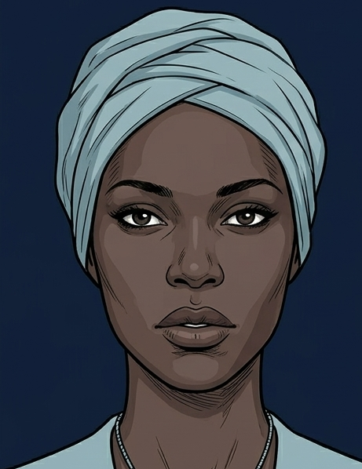
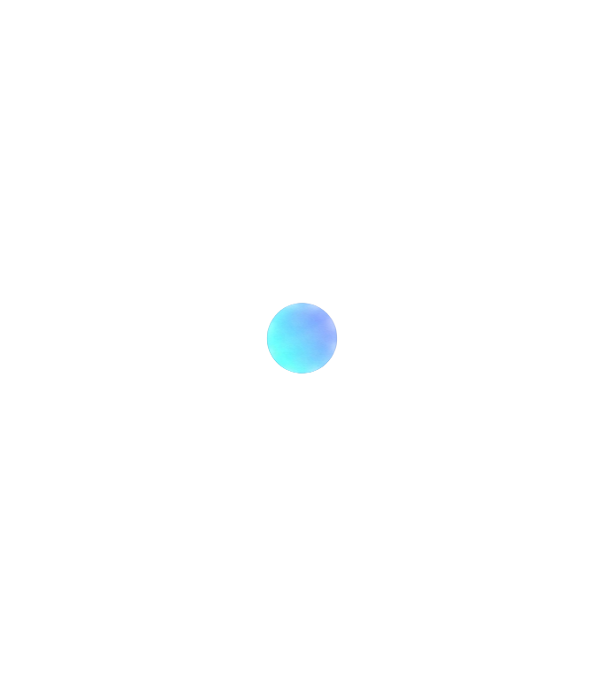
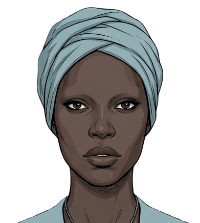
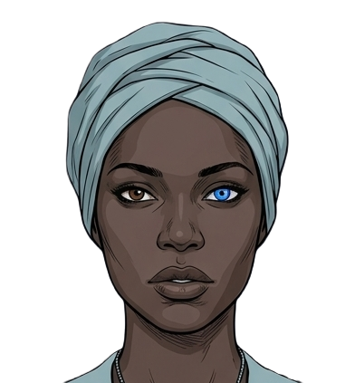
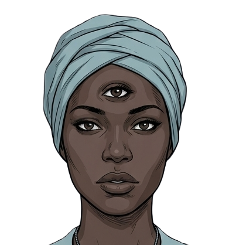
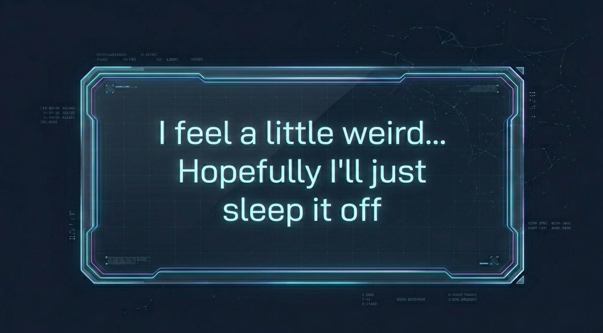
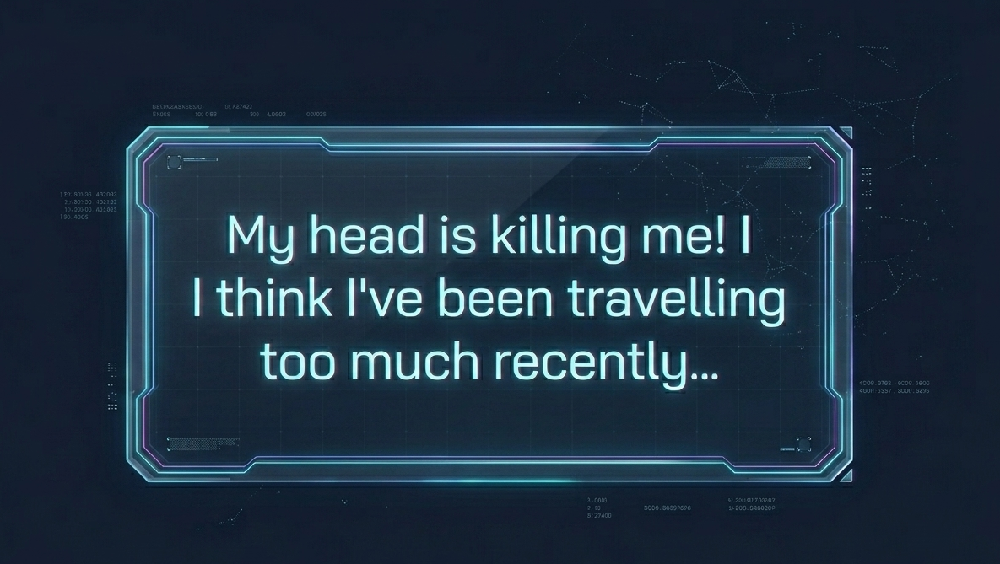

Below, you will find a demonstration on how the Transcore works in Paris 2119. In the BD, Kloé complains of headaches and eye pain, which are
passed off as normal side effects. However, when Tristan and Kloé are eating breakfast together, Tristan notes how his toast stick
looks strange, to which Kloé says it likely degenerated because of how many times it has been duplicated. The technology that creates
their breakfast relies on the same mechanism as the Transcore: replication.
In order to "teleport" from one side of the word to another
in the matter of seconds, the Transcore creates a duplicate of the individual and replicates them in the destination. The degeneration of
the toast sticks comes from the limitations of that technology and its inability to perfectly replicate something each time. Readers are
shown this when Tristan encounters zombified individuals, which are later revealed to be duplicates that were not "deleted" as they were
supposed to be. His shock, as well as the continuous use of this technology by most of the Paris 2119 society, shows the lack of transparency
regarding this technology. While one might argue that this was not deliberate, or perhaps the individuals do know the limitations, but readers
are not explicity shown that, this idea is refuted when the government wipes Kloés memory of Tristan, wipes his identity, and attempts to kill
him.
In the demo, you can see Kloé physically changes with each use of the Transcore. Though you can see vast physical changes, she cannot. This is
intentional to show how she is physiologically changed by using the Transcore, yet fails to see the true horror of the technology. Click the button
below to start the demo.






